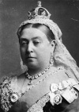

Kraliçe Victoria (1819–1901), İngiltere’yi tartışmasız bir biçimde dünyanın askeri süper gücü olduğu dönemde, altmış üç yıl boyunca yönetti. Viktorya Çağı olarak anılan bu dönem önemli bilimsel ve teknik atılımların, politik ve kültürel dönüşümlerin yaşandığı bir zaman aralığı oldu.

Viktorya döneminde İngiliz monarşisi gerçek politik güç kullanmayan sembolik bir kuruma dönüştü. Bununla birlikte önemli bir figür olarak varlığını korumaya devam etti. Kraliçe İngiliz görkeminin sembolü ve belki de dünyanın en çok tanınan insanıydı.
Victoria, Kral 3. George’un (1738-1820) torunuydu. Amcası 4. William’ın (1765-1837) ölümünün ardından tahta geçti. Zira amcasının hiç meşru çocuğu yoktu. Kraliçe olduğu sırada on sekiz yaşındaydı.
Üç yıl sonra bir Alman prensi olan Saxe-Coburg-Gotha’lı Albert’le (1819–1861) evlendi. Kısa sürede dokuz çocuğundan ilkini doğurdu. Albert’in 1861 yılında tifodan ölümü kraliçe için büyük şok oldu. Hayatının kalan kısmını yas içinde geçirdi ve bir daha asla evlenmedi. Cemiyet hayatından elini eteğini çektikten sonra ona “Windsor Dulu” denilmeye başlandı.
Victoria’nın döneminde İngiltere’de büyük bir ekonomik refah artışı yaşandı. Endüstride önemli gelişmeler oldu ve orta sınıf filizlenmeye başladı. İşçi hareketi de onun döneminde gelişti ve daha fazla siyasi güç elde etmek için mücadele etmeye başladı. Victoria’nın aynı zamanda sosyal gelişmelere yönelik büyük bir ilgisi vardı. Parlamentonun gücü ise onun döneminde gitgide artmıştı.
Uluslararası arenada ise Victoria, 19. yy’ın sonlarında gücünün doruğuna ulaşan İngiliz İmparatorluğu’nun simgesi haline gelmişti. 1876 yılında Hindistan İmparatoriçesi ilan edildi. 1897 yılında tahta çıkışının altmışıncı yılını kutlamak için düzenlenen “Elmas Jübilesi” imparatorluk çapında büyük bir coşkuyla kutlandı (Richard Kipling’in imparatorluğa yazılmış bir güzelleme olan şiiri Recessional (Kapanış) tören için bestelenmişti).
Victoria seksen bir yaşında öldü. Yerine oğlu 7. Edward (1841-1910) geçti.
Ek Bilgiler
1- Victoria, Birleşik Krallık tarihinin en uzun süre tahtta kalan monarkıdır. Kraliçe 2. Elizabeth’in (1926-) bu rekoru aşabilmesi için 2016 yılına kadar tahtta kalması gerekmektedir.
2- Victoria vaftiz ismi olan “Alexandria”dan dolayı “Drina” lakabıyla da anılmıştır.
3- Victoria’nın, bazıları Avrupa’nın diğer kraliyet aileleri ile evlenen dokuz çocuğu vardı. İsveç, Norveç, İspanya ve Danimarka’nın günümüzdeki monarkları onun soyundan gelmektedir.